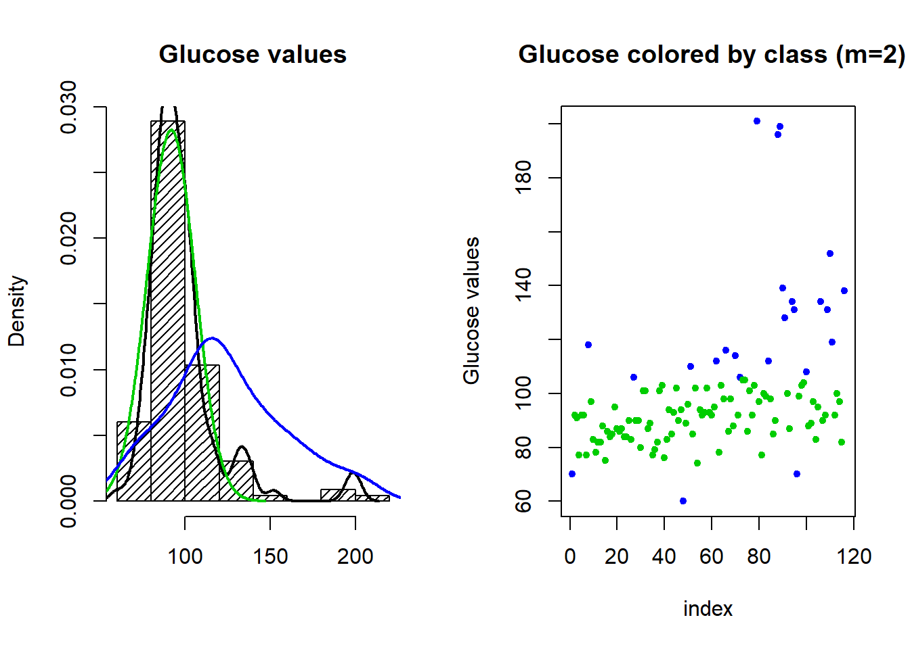
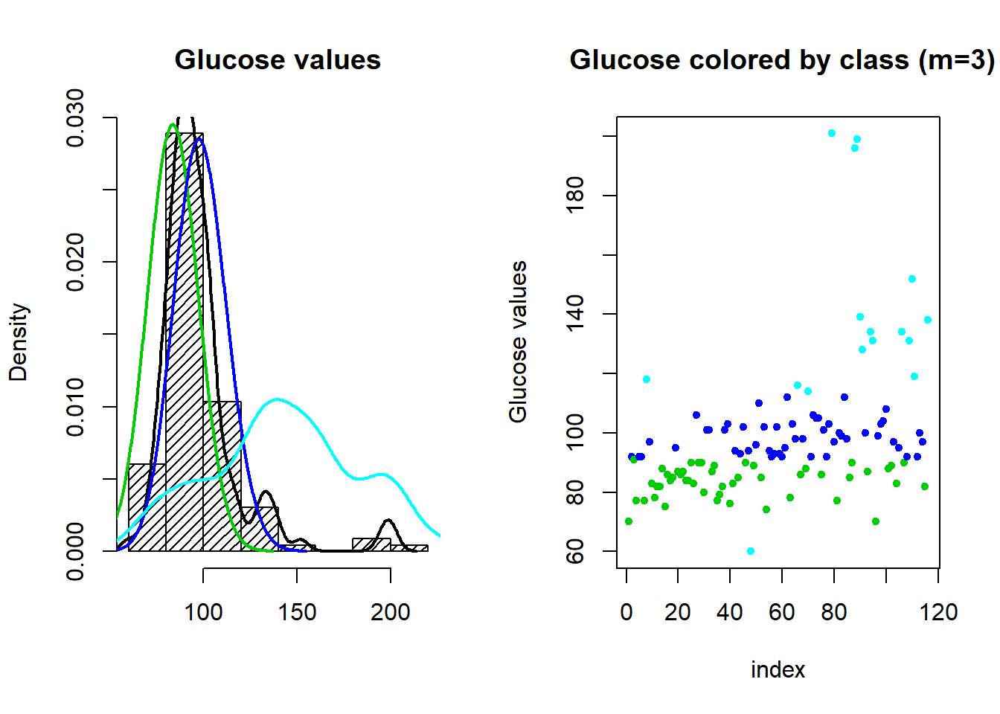

2.6 assignment Glucose
Assignment from Lesson 3
2020-02-26
Using only the base and stats packages in R, define the iterative steps of ExpectationMaximization applied to the Glucose variable of the Breast Cancer Coimbra data set, searching for 2 or more latent classes.
2.6.1 Defining a function for Expectation-Maximization algorithm
# function for E-M algorithm
emf<-function(xx = vv, # a vector with the data
m = 2, # number of clustres
method = "crisp", # method used for parameters estimation in each class; options: "crisp" or "soft"
itera = 10, # number of iterations
eps = 0.01, # the accepted error to converge (e)
params = "random", # initial parameters, if "random" 'm' values from 'xx' are randomly select, or we can input a vector with 'm' values
main="Glucose level", # histogram title
seed = 0 # value for set.seed()
){
medias=NA
desvpadrao=NA
if (params == "random") {
set.seed(seed)
param.mean<-sample(xx,m)
param.sd<-rep(sd(xx)/m,m)
} else {
param.mean<-params
param.sd<-rep(sd(xx)/m,m)
}
for (k in 1:itera){
densities<-sapply(1:m,
function(i){dnorm(xx,
mean=param.mean[i],
sd=param.sd[i])})
relevance<-t(apply(densities,1,function(l){l/sum(l)}))
attrib<-t(apply(relevance,1,
function(l){replace(rep(0,m),which.max(l)[1],1)}))
# Re-estimates the parameters of the probability distribution of each class
if (method == "crisp") {
## M-step (alternative 1: crisp)
param.mean.new<-sapply(1:m,
function(j){mean(xx[attrib[,j]==1])})
param.sd.new<-sapply(1:m,
function(j){sqrt(sum(relevance[,j]*(xx-param.mean[j])^2)/sum(relevance[,j]))})
} else {
## M-step (alternative 2: soft)
param.mean.new<-sapply(1:m,
function(j){sum(xx*relevance[,j])/sum(relevance[,j])})
param.sd.new<-sapply(1:m,
function(j){sqrt(sum(relevance[,j]*(xx-param.mean[j])^2)/sum(relevance[,j]))})
}
# convergence the maximum number of iterations (k).
cat("iteration", k, "evolution:",
dif<-sum(abs(param.mean.new - param.mean)), "\n")
if(dif < eps) break # the accepted error to converge (e)
param.mean<-param.mean.new
param.sd<-param.sd.new
}
## ploting the histogram and density curve for the vector of data
hist(xx, density = 20,
main=main,
xlab="", freq=F)
lines(density(xx),
lwd=2,col="black")
## save means, std deviations and classes' attributes on a list
result<-list(medias = param.mean,
desvpadrao = param.sd,
classe = as.data.frame(attrib))
}2.6.2 2 clusters density curves
# reading the data
breast<-read.csv("2.UploadedData/dataR2.csv")
par(mfrow=c(1,2))
# run the EM function for Glucose with 2 clusters and max 20 iterations
res<-emf(xx = breast$Glucose, itera = 20, m=2, method = "crisp", main = "Glucose values", seed = 0)## iteration 1 evolution: 17.79331
## iteration 2 evolution: 9.991458
## iteration 3 evolution: 9.361819
## iteration 4 evolution: 1.118374
## iteration 5 evolution: 2.419946
## iteration 6 evolution: 5.454559
## iteration 7 evolution: 0# add density curves for each class
lines(density(rnorm(100, res$medias[1], res$desvpadrao[1]), bw = 12),lwd=2,col=3)
lines(density(rnorm(100, res$medias[2], res$desvpadrao[2]), bw = 12),lwd=2,col=4)
## column with 2 classes
attach(res$classe)
classe2<-ifelse(V1 == 1, 3 , 4) # create 'm' classes
detach()
# Plot the values in which each point has a color corresponding to the class to which it belongs
plot(1:length(breast$Glucose), breast$Glucose, col=classe2, pch=20,
xlab="index", ylab="Glucose values",
main = " Glucose colored by class (m=2)")
2.6.3 3 clusters density curves
par(mfrow=c(1,2))
# run the EM function for Glucose with 3 clusters and max 20 iterations
res<-emf(xx = breast$Glucose, itera = 20, m=3, method = "crisp", main = "Glucose values", seed = 0)## iteration 1 evolution: 22.28802
## iteration 2 evolution: 16.6689
## iteration 3 evolution: 3.445327
## iteration 4 evolution: 0.3056396
## iteration 5 evolution: 0# add density curves for each class
lines(density(rnorm(100, res$medias[1], res$desvpadrao[1]), bw = 12),lwd=2,col=3)
lines(density(rnorm(100, res$medias[2], res$desvpadrao[2]), bw = 12),lwd=2,col=4)
lines(density(rnorm(100, res$medias[3], res$desvpadrao[3]), bw = 12),lwd=2,col=5)
## column with 3 classes
attach(res$classe)
classe3<-ifelse(V1 == 1, 3,
ifelse(V2 == 1, 4,
5)) # create 'm' classes
detach()
plot(1:length(breast$Glucose), breast$Glucose, col=classe3, pch=20,
xlab="index", ylab="Glucose values",
main = " Glucose colored by class (m=3)")